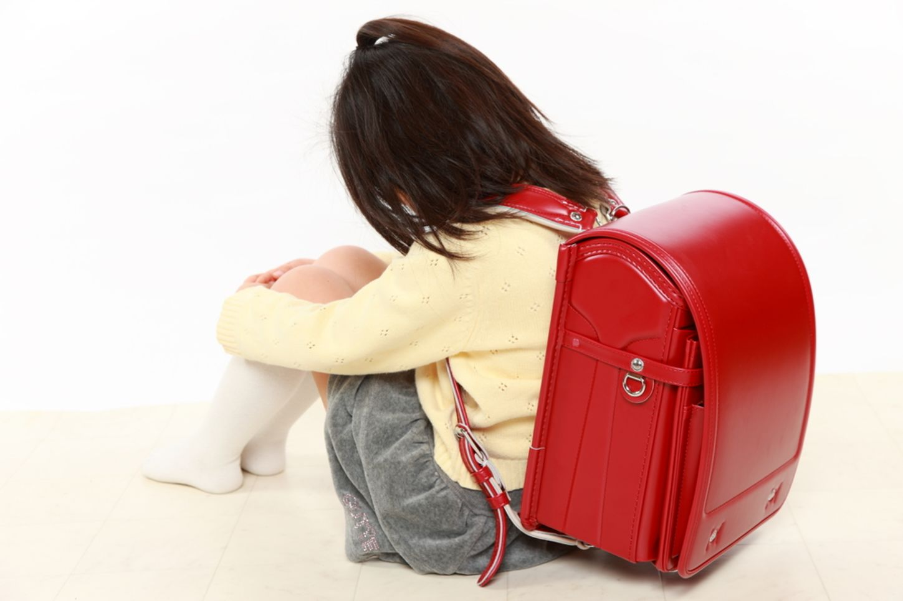
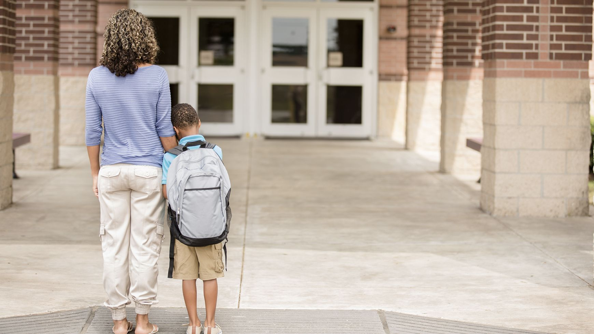

Kelompok 5 news
Mogok Sekolah
Sebagaimana dilansir dari Raising Children Network yang merupakan organisasi parenting di Australia school refusal alias mogok sekolah didefinisikan sebagai keadaan saat anak menunjukkan penolakan yang ekstrim untuk pergi ke sekolah, baik tidak pergi ke sekolah sama sekali atau pada hari dan kelas tertentu.Penolakan ini disebut sebagai respon anak terhadap masalah yang dialaminya di sekolah. Berikut adalah masalah umum yang dihadapi anak-anak yang mogok sekolah:

Penyebab Mogok Sekolah
Anak merasa tidak nyaman dengan lingkungan sekolahnya
Anak tidak memiliki teman sepermainan atau kerap mengalami perundungan atau bullying di sekolah, sehingga ia menjadi takut atau malas ke sekolah
Anak kesulitan memahami pelajaran, misalnya anak sulit konsentrasi akibat penyakit tertentu, sulit melihat tulisan di papan tulis karena matanya minus, bahkan dampak kecanduan gadget
Orang tua kurang memberikan perhatikan akibat kesibukan masing-masing. Anak bisa menganggap bahwa dengan mogok sekolah, ia akan mendapatkan perhatian dari kedua orang tuanya
Akibat Mogok Sekolah
tidak mendapat ijazah akan berakibat susah melamar pekerjaan
, merasa kurang percaya diri di lingkungan baru karena pendidikan yang kurang mencukupi
, kurang mengerti bagaimana menyelesaikan sesuatu dengan ajaran yang benar, merasa tidak tenang dan juga merasa tidak nyaman di saat seseorang membahas tentang pendidikan walaupun bukan dengan kita, depresi/frustasi karena merasa tidak berguna untuk membantu orang tua dalam perihal mencari nafkah
Solusi Mogok Sekolah
1.Menunjukkan empati atau dukungan kepadanya.
Setelah anak bercerita mengenai apa penyebab ia malas bersekolah, coba lakukan pendekatan secara perlahan 2. Membicarakan masalah yang dihadapi anak dengan pihak sekolah
Jika Bunda dan Ayah melihat kemungkinan ada masalah di sekolah, luangkan waktu bertemu dengan guru atau kepala sekolah untuk membicarakan masalah tersebut
3. Memberikan aktivitas bermanfaat di rumah pada jam sekolah
Tidak apa-apa bila sesekali memenuhi keinginan anak untuk tidak masuk sekolah, apalagi jika ia memang benar-benar sakit
4. Mempersiapkan kebutuhan sekolah pada malam sebelumnya
Daripada menyiapkan buku dan perlengkapan sekolah dengan terburu-buru di pagi hari, mengajak anak untuk mempersiapkan semua perlengkapan di malam hari dapat membantunya lebih siap dan tidak terlambat ke sekolah.

Kesimpulan
Ketika anak berperilaku yang tidak kita harapkan pastilah ia memiliki alasan dibalik perilaku itu. Orang tua yang bijak tentu akan menyikapi dengan mencari tau permasalahannya dan mencari solusi yang terbaik demi kepentingan anak, bukan tuntutan-tuntutan yang diharapkan anak, namun dorongan dan dukungan dari orang tua yang membuat anak dapat bertumbuh dan berkembang dengan baik.
Anggota kelompok:
Dian 7
Jessica 11
Tegar 20
Vernal 23
Anya 25